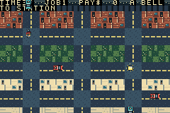
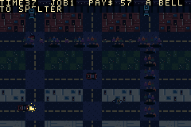
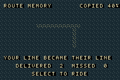
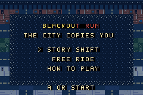

A

Ride a line
Pick up automatically, read the street grid, and deliver before dispatch closes the job.
A complete Game Boy Advance arcade game
Ride the fastest line through Port Meridian. Then survive the traffic that copies it.

01 / THE RULE
Every completed delivery is written into Route Memory. The city copies successful streets, crowds thicken, and the quick line you taught in the morning can seize up by night. Ring the bell for a gap. Brake for the corner. Or teach the city somewhere new.
A

Pick up automatically, read the street grid, and deliver before dispatch closes the job.
B

The route report preserves your line and measures how much of it the city copied.
C
Copied foot and cycle traffic turns yesterday’s clean shortcut into today’s moving obstacle.
02 / DISPATCH CARD
The only thing that levels up is the city’s memory of you.

03 / NIGHT SERVICE
Two morning jobs. Two rush-hour jobs. One final blackout shift through a city that already knows your habits. Finish the campaign, chase a cleaner line in Free Ride, then run it again.
Take the night shift